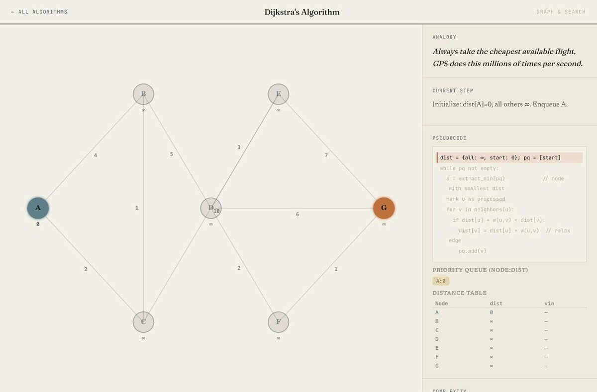
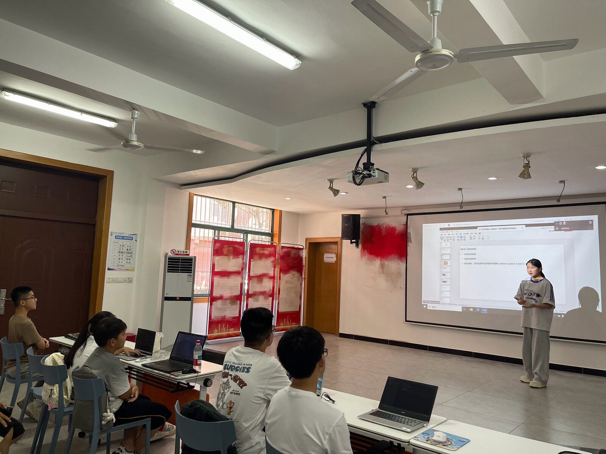

Project 05 of 06
Stepping-Stones · 铺路石 · Shanghai · four years
A curriculum, and the scheduling problem behind it
Stepping-Stones is a volunteer teaching organization in Shanghai. Four years there produced two pieces of work. The first is a way of teaching programming to beginners. The second is the tool the organization needed once the teaching had shown where its actual bottleneck was.

Open an algorithm visualiser
Sixteen of them, one per concept. Each runs the algorithm a step at a time beside its pseudocode, with the analogy it is taught through at the top. This one is Dijkstra; the rest are listed on the teaching page.
→ step through DijkstraOne · teaching Java, four years, fifty-odd students
The method is analogy-first, and it has three steps that never change order. A concrete situation the student already understands. An explicit bridge from that situation to the mechanism. Then the point where the analogy breaks.
The third step took four years to start taking seriously. Every analogy fails somewhere, and a student who walks into the failure without warning concludes they misunderstood the algorithm, when in fact they understood the analogy correctly and the analogy ran out. Writing the failure point into the lesson is cheaper than rebuilding a student's confidence afterwards.

4 analogy write-ups · 1 full lesson plan · 21 curriculum topics · 16 algorithm visualisers · GitHub ↗
Two · assigning forty volunteers to thirty classes
After the teaching term the organization needed to decide who goes where. The obvious framing is a commute problem and the obvious framing is wrong. Their own stated first priority settled it: close but at the wrong time is not a candidate at all. So time matching is a hard constraint and everything else is solved in strict priority order rather than as a weighted sum.
| Order | Objective |
|---|---|
| 1 | Cover as many classes as possible with at least one volunteer |
| 2 | Seat as many volunteers as possible |
| 3 | Minimize total commute |
Solving the levels in sequence means there are no weights to tune, and each level corresponds to something the organization actually said rather than to a coefficient someone chose. Two implementations share the model: a single-file web page the scheduler opens by double-clicking, using a min-cost flow with convex cost arcs, and a Python command-line version using CP-SAT. They are checked against each other to confirm they agree.
| Result | Value |
|---|---|
| Volunteers seated | 36 of 40 |
| Classes with at least one volunteer | 27 of 30 |
| Classes fully staffed | 9 of 30 |
| Mean commute, one way | 25.8 min |
| Structural shortfall | 20 places |
Each volunteer takes one class, so forty is the ceiling against sixty places and twenty of them cannot be filled by any assignment. Three classes got nobody, and one of those had zero available volunteers for its slot, which is a recruitment problem wearing a scheduling problem's clothes. The supply-and-demand table showing Sunday morning short by five and Friday evening heavily oversubscribed is probably worth more to the organization than the roster itself.
Where the commute estimate stops being usable
Without a map API the tool builds its own graph of the Shanghai metro, 24 lines and 416 stations, and estimates travel time from station geometry with a fixed transfer penalty. Checked against twelve station pairs, nine land inside a common-sense range and the rest are two to five minutes out.
That is accurate enough to find a structural gap and not accurate enough to be a scheduling authority, because the fixed transfer penalty is exactly the assumption that fails. Two stations can be close on a map, on different lines, and a long way apart in practice. The documentation says to connect a real map API before the output is used for real, and lists four further gaps: no service start and end dates, no returning-volunteer flag, no last-mile address, and time resolution only down to morning, afternoon or evening.